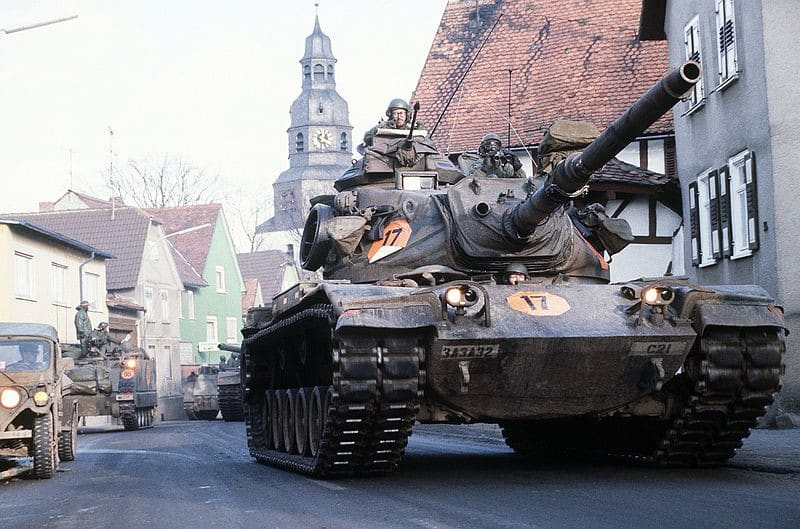

Ancient Era
Warfare from the beginnings of recorded history through the end of antiquity, including the development of early armies, empires, and foundational military systems.

American Geek Interests Hub
A survey of warfare across eras, from ancient campaigns to modern operations, with room for both reference material and speculative what-ifs.
Throughout history, warfare has both divided and bonded societies. The conduct of war has shaped civilizations, technologies, governments, and the ways people organize themselves under pressure.
This section is organized by period so it is easier to move from broad eras into specific battles, campaigns, orders of battle, and technical subjects without losing the larger historical thread.
Warfare from the beginnings of recorded history through the end of antiquity, including the development of early armies, empires, and foundational military systems.
The long transition from late antiquity into the medieval world, where changes in social order, armor, cavalry, and fortification reshaped how wars were fought.
The spread of firearms and artillery transformed armies, fortifications, logistics, and state power, setting the stage for early modern warfare.
Industrialization enabled mass armies, rail logistics, mechanized firepower, and global conflicts on a scale that earlier periods could not sustain.
Post-1945 warfare introduced nuclear deterrence, information systems, airpower integration, precision weapons, and increasingly complex operational environments.
Alternative scenarios and counterfactual studies that test assumptions, surface decision points, and help explain why real historical outcomes developed the way they did.